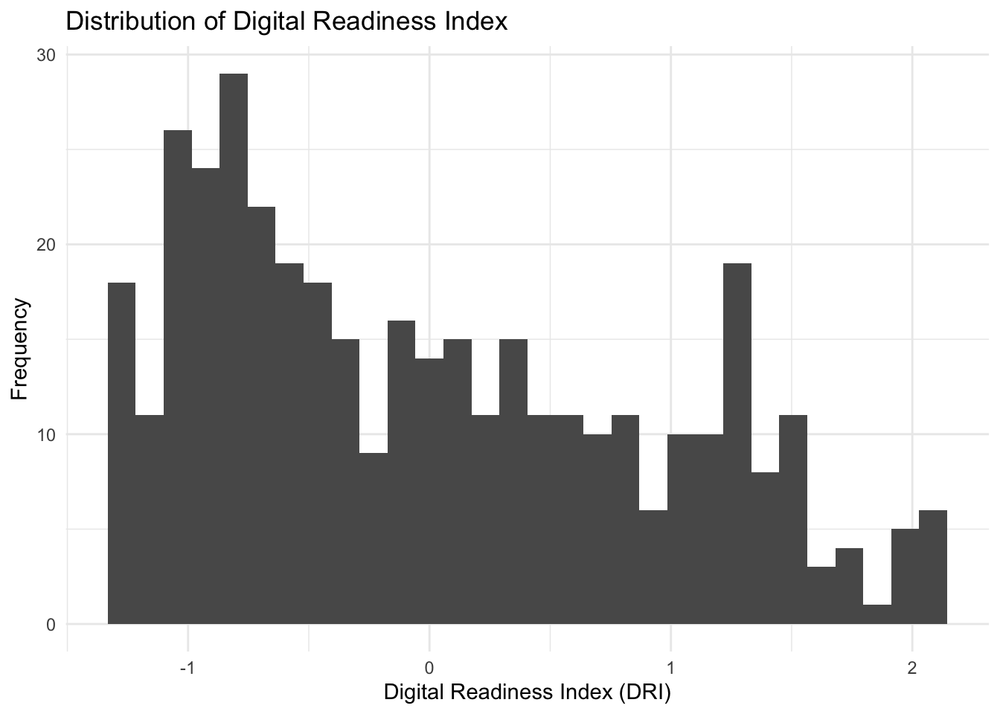
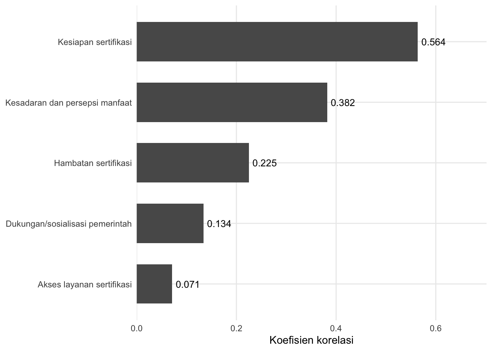

# A tibble: 6 × 10
jenis_perusahaan risiko_proyek skala_usaha kecamatan kelurahan kbli
<chr> <chr> <chr> <chr> <chr> <chr>
1 Perorangan MT Usaha Kecil Sekarbela Kekalik Jaya 47729
2 Perorangan R Usaha Mikro Ampenan Taman Sari 47192
3 Perorangan R Usaha Mikro Sandubaya Bertais 47712
4 Perorangan R Usaha Mikro Mataram Pagutan Barat 47112
5 Perorangan R Usaha Mikro Sandubaya Dasan Cermen 47215
6 Perorangan R Usaha Mikro Cakranegara Sayang-sayang 47112
# ℹ 4 more variables: judul_kbli <chr>, luas <chr>, investasi <dbl>,
# tki_org <dbl>Analisis Eksploratori dan Pemodelan Spasial UMKM Kota Mataram
Kesiapan Digital dan Kepemilikan Sertifikasi Halal
1 Latar Belakang
Data master UMKM Kota Mataram merupakan sumber informasi penting yang dapat digunakan untuk memahami karakteristik pelaku usaha sebelum dilakukan pengumpulan data mengenai tingkat kesiapan digital maupun kepemilikan sertifikasi halal. Oleh karena itu, dilakukan Analisis Data Eksploratori (Exploratory Data Analysis/EDA) untuk memperoleh gambaran umum mengenai struktur data, kualitas data, dan karakteristik UMKM yang tersedia.
2 Tujuan
Analisis ini bertujuan untuk:
- Mendeskripsikan karakteristik dataset UMKM.
- Mengidentifikasi kualitas data.
- Mengetahui distribusi karakteristik UMKM.
- Menjadi baseline sebelum survei kesiapan digital dan sertifikasi halal.
3 Dataset
Dataset yang digunakan pada penelitian ini terdiri dari data primer dan sekunder. Data primer diperoleh dari hasil survei UMKM yang dilakukan oleh tim, sedangkan data sekunder didapatkan dari data administrasi Dinas Koperasi Kota Mataram. Berikut merupakan uraian singkat dari setiap dataset.
3.1 Data resmi: profil UMKM kota Mataram
Selain data primer yang diperoleh melalui survei, penelitian ini menggunakan data administratif UMKM yang diperoleh dari Dinas terkait di Kota Mataram. Dataset tersebut digunakan untuk memberikan gambaran mengenai populasi dan karakteristik UMKM yang menjadi konteks penelitian. Dataset terdiri atas 4.185 unit usaha dengan 17 variabel yang mencakup informasi identitas usaha, karakteristik usaha, lokasi, klasifikasi kegiatan usaha, serta beberapa karakteristik ekonomi dan ketenagakerjaan.
Informasi yang tersedia meliputi nomor identifikasi usaha (NIB), nama perusahaan, jenis perusahaan, tingkat risiko proyek, skala usaha, alamat usaha, kecamatan dan kelurahan, kode dan uraian KBLI, identitas pemilik usaha, serta informasi kontak. Dataset juga memuat beberapa variabel kuantitatif, yaitu luas tanah, jumlah investasi, dan jumlah tenaga kerja. Dengan demikian, data administratif ini menyediakan informasi mengenai karakteristik struktural dan spasial UMKM yang tidak seluruhnya diperoleh dari instrumen survei.
3.1.1 Ringkasan Karakteristik UMKM
Sebanyak 4.185 unit UMKM tercatat dalam dataset administratif. Variabel skala_usaha membedakan unit usaha ke dalam kategori seperti usaha mikro dan usaha kecil, sehingga dapat digunakan untuk menggambarkan struktur skala usaha dalam populasi yang diamati. Informasi lokasi pada tingkat kecamatan dan kelurahan juga memungkinkan distribusi UMKM dianalisis secara spasial.
# A tibble: 4 × 3
skala_usaha n persentase
<chr> <int> <dbl>
1 Usaha Mikro 3896 93.1
2 Usaha Kecil 231 5.52
3 Usaha Besar 46 1.10
4 Usaha Menengah 12 0.287Distribusi tersebut memberikan gambaran mengenai konsentrasi UMKM secara administratif. Informasi ini selanjutnya dapat digunakan sebagai konteks dalam analisis spasial, terutama karena tingkat kesiapan digital yang diperoleh dari survei dapat dibandingkan dengan karakteristik wilayah tempat UMKM beroperasi.
Selain karakteristik kategorikal, dataset juga memuat informasi mengenai jumlah investasi dan tenaga kerja. Variabel jumlah_investasi_rp menunjukkan nilai investasi usaha dalam rupiah, sedangkan tki_org menunjukkan jumlah tenaga kerja pada masing-masing unit usaha. Karena kedua variabel tersebut memiliki skala yang berbeda dan berpotensi memiliki distribusi yang menceng, statistik deskriptif seperti median dan rentang interkuartil digunakan sebagai pelengkap nilai rata-rata.
# A tibble: 6 × 3
kecamatan n persentase
<chr> <int> <dbl>
1 Mataram 802 19.2
2 Cakranegara 799 19.1
3 Sandubaya 785 18.8
4 Selaparang 627 15.0
5 Ampenan 601 14.4
6 Sekarbela 571 13.6Data administratif ini selanjutnya digunakan sebagai sumber informasi mengenai karakteristik dan distribusi UMKM, sedangkan data survei digunakan untuk membangun dan mengukur Digital Readiness Index (DRI). Pemisahan fungsi kedua sumber data tersebut penting karena DRI dibentuk berdasarkan respons terhadap item-item instrumen survei, bukan berdasarkan variabel administratif dari Dinas.
| Karakteristik UMKM Menurut Kecamatan | |||||||
| Jumlah UMKM dan komposisi skala usaha; investasi dan tenaga kerja disajikan sebagai median (Q1–Q3) | |||||||
| kecamatan | Jumlah UMKM | Investasi (Rp juta) | Tenaga Kerja | Usaha Besar | Usaha Kecil | Usaha Mikro | Usaha Menengah |
|---|---|---|---|---|---|---|---|
| Ampenan | 601 | 10.0 (5.0–50.0) | 2 (1–2) | 3 (0.5%) | 35 (5.8%) | 563 (93.7%) | 0 (0.0%) |
| Cakranegara | 799 | 15.0 (5.0–50.0) | 2 (1–2) | 12 (1.5%) | 31 (3.9%) | 754 (94.4%) | 2 (0.3%) |
| Mataram | 802 | 20.0 (5.0–50.0) | 2 (1–2) | 14 (1.7%) | 55 (6.9%) | 731 (91.1%) | 2 (0.2%) |
| Sandubaya | 785 | 20.0 (6.0–50.0) | 2 (1–2) | 11 (1.4%) | 28 (3.6%) | 742 (94.5%) | 4 (0.5%) |
| Sekarbela | 571 | 15.0 (5.0–50.0) | 2 (1–2) | 3 (0.5%) | 40 (7%) | 527 (92.3%) | 1 (0.2%) |
| Selaparang | 627 | 15.0 (4.0–50.0) | 2 (1–2) | 3 (0.5%) | 42 (6.7%) | 579 (92.3%) | 3 (0.5%) |
3.2 Data survei
Survei yang digunakan dalam penelitian ini dirancang untuk memperoleh gambaran mengenai karakteristik usaha sekaligus tingkat kesiapan digital pelaku Usaha Mikro, Kecil, dan Menengah (UMKM). Instrumen terdiri atas bagian informasi umum mengenai usaha dan pemilik, serta sejumlah pernyataan yang mengukur aspek-aspek terkait penggunaan dan kesiapan teknologi digital. Pada bagian karakteristik usaha, responden diminta memberikan informasi mengenai jenis usaha, penggunaan kanal penjualan atau pembelian secara daring, usia usaha, jumlah tenaga kerja, omzet bulanan, serta karakteristik pemilik seperti usia dan pendidikan terakhir. Informasi lokasi usaha juga dikumpulkan hingga tingkat kelurahan.
Bagian utama instrumen menggunakan skala Likert lima tingkat, yaitu Sangat Tidak Setuju (STS), Tidak Setuju (TS), Netral (N), Setuju (S), dan Sangat Setuju (SS). Pernyataan dalam instrumen mencakup beberapa aspek kesiapan dan pemanfaatan teknologi digital. Aspek-aspek tersebut meliputi infrastruktur digital, keterampilan digital, proses bisnis, strategi digital, keamanan digital, serta data dan inovasi. Misalnya, infrastruktur digital mencakup kestabilan koneksi internet, ketersediaan perangkat yang memadai, dan penggunaan aplikasi daring atau cloud. Sementara itu, keterampilan digital mencakup kemampuan dasar menggunakan teknologi, pengalaman mengikuti pelatihan digital, dan pemahaman mengenai pemasaran digital.
Selain aspek-aspek tersebut, instrumen juga memuat pertanyaan mengenai e-commerce dan media sosial serta sertifikasi halal. Bagian e-commerce dan media sosial mengukur penggunaan media sosial untuk promosi, pemanfaatan marketplace, dan proporsi penjualan yang berasal dari kanal daring. Bagian sertifikasi halal mengukur pengetahuan, persepsi manfaat, hambatan, dukungan pemerintah, kesiapan administrasi, serta kebutuhan pendampingan dalam proses sertifikasi.
Dalam penelitian ini, tidak seluruh bagian survei digunakan sebagai indikator pembentuk DRI. Item yang secara substantif merepresentasikan kesiapan dan kapabilitas digital dipilih dan selanjutnya dikelompokkan ke dalam lima dimensi DRI, yaitu Skill, Business, Strategy, Security, dan Data. Dengan demikian, informasi karakteristik usaha dan bagian survei lainnya digunakan sebagai informasi pendukung atau variabel penelitian, sedangkan item yang relevan dengan lima dimensi tersebut menjadi dasar dalam proses evaluasi struktur instrumen dan konstruksi skor DRI.
# A tibble: 6 × 38
kode_umkm kecamatan kelurahan jenis_usaha online usia_usaha tenaga_kerja omset
<chr> <chr> <chr> <chr> <chr> <chr> <chr> <chr>
1 UMKM001 Sekarbela Jempong … Jasa, Perd… ya 1-3 tahun 1-5 orang kura…
2 UMKM002 Mataram Pagutan Jasa ya 1-3 tahun 1-5 orang kura…
3 UMKM003 Mataram Pagesang… Kuliner ya 1-3 tahun 1-5 orang kura…
4 UMKM004 Sandubaya Turida Perdagangan ya lebih dar… 6-10 orang lebi…
5 UMKM005 Sekarbela Jempong … Kuliner, J… ya 1-3 tahun 1-5 orang kura…
6 UMKM006 Selapara… Dasan Ag… Kuliner ya 4-6 tahun 1-5 orang kura…
# ℹ 30 more variables: usia_pemilik <chr>, pendidikan <chr>, INF1 <dbl>,
# INF2 <dbl>, INF3 <dbl>, SKL1 <dbl>, SKL2 <dbl>, SKL3 <dbl>, BUS1 <dbl>,
# BUS2 <dbl>, BUS3 <dbl>, STR1 <dbl>, STR2 <dbl>, SEC1 <dbl>, SEC2 <dbl>,
# DAT1 <dbl>, DAT2 <dbl>, ECO1 <dbl>, ECO2 <dbl>, ECO3 <dbl>, HAL1 <dbl>,
# HAL2 <dbl>, HAL3 <dbl>, HAL4 <dbl>, HAL5 <dbl>, HAL6 <dbl>, HAL7 <dbl>,
# HAL8 <dbl>, HAL9 <dbl>, HAL10 <dbl>3.3 Konstruksi Digital Readiness Index (DRI)
Digital Readiness Index (DRI) dikonstruksi untuk memperoleh satu ukuran komposit yang merepresentasikan tingkat kesiapan digital pada setiap responden. Konstruksi DRI diawali dengan identifikasi struktur dimensi yang mendasari instrumen pengukuran. Instrumen awal terdiri atas enam kelompok indikator, yaitu Infrastruktur (INF), Skill (SKL), Business (BUS), Strategy (STR), Security (SEC), dan Data (DAT). Sebelum skor indeks dihitung, dilakukan pemeriksaan terhadap kelayakan data untuk analisis faktor. Nilai Kaiser–Meyer–Olkin (KMO) secara keseluruhan sebesar 0,94 menunjukkan bahwa korelasi antaritem sangat memadai untuk analisis faktor. Selain itu, uji Bartlett terhadap matriks korelasi menghasilkan \(\chi^2=8001.616\) dengan \(df=153\) dan \(p<0.001\), sehingga hipotesis bahwa matriks korelasi merupakan matriks identitas ditolak. Dengan demikian, data memenuhi persyaratan awal untuk mengevaluasi struktur konstruk.
Selanjutnya dilakukan exploratory factor analysis (EFA) menggunakan metode minimum residual (minres), rotasi oblimin, dan matriks korelasi polikhorik karena indikator diukur pada skala ordinal. Parallel analysis memberikan indikasi awal adanya tiga faktor statistik. Namun, hasil tersebut tidak langsung digunakan sebagai dasar untuk menetapkan struktur substantif DRI. Evaluasi struktur juga mempertimbangkan kerangka konseptual instrumen dan interpretabilitas indikator. Hasil EFA tiga faktor menunjukkan bahwa sebagian besar indikator memiliki communality yang tinggi, tetapi beberapa indikator menunjukkan cross-loading. Secara khusus, indikator INF1 dan INF2 membentuk kelompok yang berbeda dari INF3, sedangkan INF3 menunjukkan pola pemuatan yang lebih dekat dengan kelompok kemampuan (capability). Hal ini menunjukkan bahwa struktur empiris tidak sepenuhnya mereproduksi pengelompokan awal indikator berdasarkan label konseptual.
Temuan tersebut penting karena tujuan penelitian bukan semata-mata memperoleh jumlah faktor statistik yang paling kecil, tetapi membangun indeks yang memiliki interpretasi substantif dan dapat digunakan secara konsisten pada tahap analisis berikutnya. Oleh karena itu, evaluasi struktur dilakukan dengan mempertimbangkan kombinasi antara hasil analisis faktor eksploratori, makna substantif setiap indikator, serta struktur konseptual DRI yang digunakan dalam penelitian.
Berdasarkan evaluasi tersebut, indikator Infrastructure tidak dipertahankan sebagai dimensi tersendiri dalam konstruksi skor akhir. Dengan demikian, struktur operasional DRI yang digunakan terdiri atas lima dimensi, yaitu Skill, Business, Strategy, Security, dan Data. Kelima dimensi tersebut selanjutnya diperlakukan sebagai komponen utama dari konstruk Digital Readiness.
Untuk memastikan bahwa kelima dimensi tersebut memiliki dasar pengukuran yang memadai, dilakukan pengujian confirmatory factor analysis (CFA) pada struktur first-order. Hasil CFA menunjukkan bahwa indikator-indikator pada masing-masing dimensi memiliki standardized factor loading yang tinggi dan signifikan. Pada dimensi Skill, misalnya, loading SKL1, SKL2, dan SKL3 masing-masing sebesar 0,811, 1,020, dan 0,867. Pada dimensi Business, loading BUS1–BUS3 berada pada kisaran 0,895–0,965. Dimensi Strategy memiliki loading 0,889 dan 0,942, Security sebesar 0,964 dan 0,951, sedangkan Data sebesar 0,923 dan 0,873. Secara umum, hasil tersebut menunjukkan bahwa indikator-indikator yang dipertahankan memberikan kontribusi kuat terhadap dimensi masing-masing.
Selanjutnya, struktur lima dimensi juga dievaluasi melalui model second-order, dengan DigitalCapability sebagai konstruk tingkat kedua yang direfleksikan oleh Skill, Business, Strategy, Security, dan Data. Model menghasilkan CFI = 0,998, TLI = 0,997, dan SRMR = 0,059, yang menunjukkan kesesuaian model yang baik pada beberapa indeks fit. Namun demikian, model juga menghasilkan indikasi Heywood case, khususnya varians residual negatif pada dimensi Data dan beberapa permasalahan varians pada konstruk laten. Oleh karena itu, hasil second-order CFA tidak digunakan sebagai dasar utama untuk mengestimasi skor indeks. Model tersebut digunakan terutama sebagai evaluasi terhadap struktur konstruk, sedangkan konstruksi skor DRI dilakukan dengan pendekatan komposit yang lebih sederhana dan transparan.
3.3.1 Standardisasi Skor Dimensi
Sebelum digabungkan menjadi indeks komposit, skor untuk masing-masing dimensi distandardisasi menggunakan z-score. Standardisasi dilakukan untuk menempatkan kelima dimensi pada skala yang sama sehingga dimensi dengan variabilitas awal yang berbeda tidak memberikan pengaruh yang tidak proporsional terhadap nilai indeks.
Untuk setiap dimensi \(d\), skor terstandardisasi dihitung sebagai
\[ Z_{id} = \frac{X_{id} - \bar{X}_{d}}{s_d}, \]
dengan \(X_{id}\) menyatakan skor dimensi \(d\) untuk responden \(i\), \(\bar{X}_{d}\) adalah rata-rata skor dimensi tersebut, dan \(s_d\) adalah standar deviasi skor dimensi tersebut.
Dengan demikian, diperoleh lima skor terstandardisasi:
- \(Skill_z\) untuk dimensi Skill;
- \(Business_z\) untuk dimensi Business;
- \(Strategy_z\) untuk dimensi Strategy;
- \(Security_z\) untuk dimensi Security; dan
- \(Data_z\) untuk dimensi Data.
Kelima dimensi menunjukkan hubungan yang kuat satu sama lain. Korelasi antardimensi berada pada kisaran 0.733–0.883. Selain itu, konsistensi internal kelima skor dimensi sebagai satu set ukuran komposit menunjukkan nilai Cronbach’s alpha sebesar 0.95 (95% CI: 0.94–0.96). Hasil tersebut mendukung penggunaan kelima dimensi secara bersama-sama dalam pembentukan ukuran komposit Digital Readiness.
3.3.2 Pembentukan DRI
Setelah standardisasi, DRI dihitung sebagai rata-rata aritmetika dari kelima skor dimensi:
\[ DRI_i = \frac{ Skill_{z,i} + Business_{z,i} + Strategy_{z,i} + Security_{z,i} + Data_{z,i} }{5}. \]
Dalam implementasi menggunakan R, konstruksi DRI dilakukan dengan kode berikut:
Min. 1st Qu. Median Mean 3rd Qu. Max.
-1.2835 -0.7730 -0.1548 0.0000 0.6992 2.0778 # A tibble: 6 × 49
kode_umkm kecamatan kelurahan jenis_usaha online usia_usaha tenaga_kerja omset
<chr> <chr> <chr> <chr> <chr> <chr> <chr> <chr>
1 UMKM001 Sekarbela Jempong … Jasa, Perd… ya 1-3 tahun 1-5 orang kura…
2 UMKM002 Mataram Pagutan Jasa ya 1-3 tahun 1-5 orang kura…
3 UMKM003 Mataram Pagesang… Kuliner ya 1-3 tahun 1-5 orang kura…
4 UMKM004 Sandubaya Turida Perdagangan ya lebih dar… 6-10 orang lebi…
5 UMKM005 Sekarbela Jempong … Kuliner, J… ya 1-3 tahun 1-5 orang kura…
6 UMKM006 Selapara… Dasan Ag… Kuliner ya 4-6 tahun 1-5 orang kura…
# ℹ 41 more variables: usia_pemilik <chr>, pendidikan <chr>, INF1 <dbl>,
# INF2 <dbl>, INF3 <dbl>, SKL1 <dbl>, SKL2 <dbl>, SKL3 <dbl>, BUS1 <dbl>,
# BUS2 <dbl>, BUS3 <dbl>, STR1 <dbl>, STR2 <dbl>, SEC1 <dbl>, SEC2 <dbl>,
# DAT1 <dbl>, DAT2 <dbl>, ECO1 <dbl>, ECO2 <dbl>, ECO3 <dbl>, HAL1 <dbl>,
# HAL2 <dbl>, HAL3 <dbl>, HAL4 <dbl>, HAL5 <dbl>, HAL6 <dbl>, HAL7 <dbl>,
# HAL8 <dbl>, HAL9 <dbl>, HAL10 <dbl>, Skill <dbl>, Business <dbl>,
# Strategy <dbl>, Security <dbl>, Data <dbl>, Skill_z <dbl>, …Pada dataset akhir, seluruh 388 responden memiliki skor lengkap untuk kelima dimensi sehingga tidak terdapat responden yang kehilangan dimensi pada proses pembentukan DRI.
Nilai DRI merupakan composite standardized index, karena indeks dibentuk dari skor-skor dimensi yang telah distandardisasi menggunakan z-score. DRI tidak menggunakan transformasi min–max normalization. Oleh karena itu, nilai DRI dapat bernilai negatif maupun positif.
Secara substantif, nilai DRI diinterpretasikan relatif terhadap rata-rata sampel. Nilai DRI yang lebih tinggi menunjukkan tingkat kesiapan digital yang relatif lebih tinggi, sedangkan nilai yang lebih rendah menunjukkan tingkat kesiapan digital yang relatif lebih rendah. Nilai yang mendekati nol menunjukkan tingkat kesiapan digital yang berada di sekitar rata-rata sampel.
3.3.3 Pemeriksaan Distribusi DRI
Distribusi DRI diperiksa secara deskriptif sebelum digunakan dalam analisis spasial. Pemeriksaan meliputi statistik deskriptif dan visualisasi distribusi indeks.
Min. 1st Qu. Median Mean 3rd Qu. Max.
-1.2835 -0.7730 -0.1548 0.0000 0.6992 2.0778 [1] 0.9171383Distribusi DRI kemudian divisualisasikan menggunakan histogram:

3.3.4 Agregasi DRI pada Unit Spasial
Karena analisis selanjutnya dilakukan pada tingkat kelurahan, skor DRI individual diagregasikan ke tingkat kelurahan. Nilai DRI kelurahan dihitung sebagai rata-rata DRI seluruh responden yang berada pada kelurahan tersebut:
\[ DRI_j^{(\mathrm{area})} = \frac{1}{n_j} \sum_{i=1}^{n_j} DRI_{ij}, \]
dengan \(DRI_j^{(area)}\) merupakan nilai DRI pada kelurahan \(j\), \(n_j\) adalah jumlah responden pada kelurahan \(j\), dan \(DRI_{ij}\) adalah skor DRI responden \(i\) pada kelurahan \(j\).
# A tibble: 35 × 6
kecamatan kelurahan n DRI DRI_sd DRI_se
<chr> <chr> <int> <dbl> <dbl> <dbl>
1 Ampenan Ampenan Selatan 28 -0.425 NA NA
2 Ampenan Ampenan Tengah 1 0.197 NA NA
3 Ampenan Ampenan Utara 1 -1.28 NA NA
4 Ampenan Banjar 4 1.12 NA NA
5 Ampenan Bintaro 1 2.01 NA NA
6 Ampenan Dayan Peken 1 1.26 NA NA
7 Ampenan Kebon Sari 1 1.17 NA NA
8 Ampenan Pejarakan Karya 1 1.40 NA NA
9 Ampenan Pejeruk 1 0.429 NA NA
10 Ampenan Taman Sari 1 -0.107 NA NA
# ℹ 25 more rowsHasil agregasi menghasilkan 35 kelurahan dengan jumlah responden yang tidak sama antarwilayah. Oleh karena itu, selain nilai rata-rata DRI, jumlah responden (\(n\)) dan ukuran variasi DRI pada masing-masing kelurahan juga disimpan untuk keperluan pemeriksaan dan analisis selanjutnya.
Dengan konstruksi tersebut, DRI yang digunakan sebagai response variable dalam analisis spasial merepresentasikan rata-rata tingkat kesiapan digital pada tingkat kelurahan, bukan skor individual responden.
3.4 Aspek halal
Aspek halal dalam penelitian ini diukur melalui sepuluh pernyataan dengan skala Likert lima tingkat. Kesepuluh pernyataan mencakup pemahaman dan persepsi manfaat sertifikasi halal, pengetahuan serta kesiapan dalam proses sertifikasi, hambatan yang dihadapi, dukungan pemerintah, dan akses terhadap layanan sertifikasi halal.
3.4.1 Analisis Deskriptif
Secara deskriptif, respons UMKM cenderung menunjukkan penilaian yang positif terhadap manfaat sertifikasi halal. Hal ini terutama terlihat pada HAL2, HAL6, dan HAL9. Pada HAL2, yaitu pernyataan bahwa sertifikasi halal meningkatkan kepercayaan konsumen, sebanyak 52% responden memberikan skor 4 dan 35% memberikan skor 5. Pada HAL6 mengenai peningkatan daya saing produk, 55% responden memberikan skor 4 dan 30% skor 5. Sementara itu, pada HAL9 mengenai kemampuan sertifikasi halal dalam memperluas pasar, 56% responden memberikan skor 4 dan 34% skor 5. HAL1 mengenai pentingnya sertifikasi halal juga menunjukkan kecenderungan respons positif, dengan 43% responden memberikan skor 4 dan 28% skor 5.
Tampilkan kode
library(dplyr)
library(tidyr)
library(ggplot2)
library(scales)
load("data/halal_score.RData")
halal_likert <- halal_score %>%
select(starts_with("HAL")) %>%
pivot_longer(
cols = everything(),
names_to = "item",
values_to = "score"
) %>%
filter(!is.na(score)) %>%
count(item, score) %>%
group_by(item) %>%
mutate(
prop = n / sum(n)
) %>%
ungroup() %>%
mutate(
item = factor(item, levels = paste0("HAL", 1:10)),
score = factor(score, levels = 1:5)
)
ggplot(
halal_likert[1:50,],
aes(
x = item,
y = prop,
fill = factor(score)
)
) +
geom_col(width = 0.8) +
coord_flip() +
scale_y_continuous(
labels = percent_format(),
expand = c(0, 0)
) +
scale_fill_viridis_d(
option = "cividis",
direction = -1,
name = "Skor"
) +
labs(
x = NULL,
y = "Proporsi responden",
title = "Distribusi Respons UMKM terhadap Pernyataan Halal"
) +
theme_minimal()
Pola tersebut menunjukkan bahwa sertifikasi halal secara umum dipandang positif oleh responden, khususnya dalam kaitannya dengan kepercayaan konsumen, daya saing, dan perluasan pasar. Namun, persepsi positif mengenai manfaat sertifikasi tidak dengan sendirinya menunjukkan bahwa UMKM telah memiliki kesiapan yang sama untuk menjalankan proses sertifikasi. Oleh karena itu, item-item halal selanjutnya dianalisis untuk melihat apakah terdapat beberapa aspek yang berbeda dalam pengalaman dan persepsi UMKM terhadap sertifikasi halal.
3.4.2 Struktur dan pengelompokan aspek halal
Analisis korelasi polikorik terhadap sepuluh item menunjukkan bahwa hubungan antaritem cukup beragam. Beberapa item menunjukkan korelasi yang tinggi, terutama HAL1, HAL2, HAL6, dan HAL9. Korelasi antara HAL1 dan HAL2 sebesar 0,818, HAL2 dan HAL6 sebesar 0,835, HAL6 dan HAL9 sebesar 0,804, serta HAL2 dan HAL9 sebesar 0,733. Sebaliknya, beberapa pasangan item menunjukkan hubungan yang relatif rendah, misalnya korelasi HAL3 dengan HAL8 sebesar -0,042 dan HAL7 dengan HAL8 sebesar 0,025.
Pola tersebut menunjukkan bahwa sepuluh item tidak sepenuhnya menggambarkan satu dimensi yang homogen. Secara substantif, item-item tersebut memang mencakup beberapa aspek yang berbeda. Berdasarkan pola hubungan antaritem dan kerangka pertanyaan, empat item, yaitu HAL1, HAL2, HAL6, dan HAL9, dikelompokkan sebagai aspek kesadaran dan persepsi manfaat sertifikasi halal. HAL3 dan HAL7 membentuk aspek kesiapan sertifikasi halal, sedangkan HAL4 dan HAL8 merepresentasikan hambatan dalam proses sertifikasi halal. HAL5 dan HAL10 dipertahankan sebagai indikator tunggal yang masing-masing menggambarkan persepsi terhadap dukungan pemerintah dan akses terhadap layanan sertifikasi halal.
| Aspek | Item | Makna |
|---|---|---|
| Awareness and Perceived Benefits | HAL1, HAL2, HAL6, HAL9 | Pemahaman dan persepsi manfaat sertifikasi |
| Readiness | HAL3, HAL7 | Pengetahuan prosedur dan kesiapan administratif |
| Barrier | HAL4, HAL8 | Kendala dan kebutuhan pendampingan |
| Support | HAL5 | Persepsi terhadap sosialisasi pemerintah |
| Access | HAL10 | Persepsi mengenai akses layanan berdasarkan lokasi |
Pengelompokan tersebut juga memperoleh dukungan dari analisis CFA ordinal menggunakan estimator WLSMV. Loading terstandar untuk dimensi kesadaran dan persepsi manfaat berada pada rentang 0,834–0,919. Pada dimensi kesiapan, loading HAL3 dan HAL7 masing-masing sebesar 0,893 dan 0,884. Untuk dimensi hambatan, loading HAL4 sebesar 0,546 dan HAL8 sebesar 0,909.
Tampilkan kode
library(ggplot2)
library(dplyr)
library(tidyr)
load("data/cor_df.RData")
item_order <- c(
"HAL1", "HAL2", "HAL6", "HAL9",
"HAL3", "HAL7",
"HAL4", "HAL8",
"HAL5", "HAL10"
)
cor_df <- cor_df %>%
mutate(
item1 = factor(item1, levels = item_order),
item2 = factor(item2, levels = rev(item_order))
)
ggplot(
cor_df,
aes(x = item1, y = item2, fill = rho)
) +
geom_tile(color = "white", linewidth = 0.5) +
geom_text(
aes(label = sprintf("%.2f", rho)),
size = 3
) +
scale_fill_viridis_c(
option = "viridis",
limits = c(-1, 1),
name = "Korelasi"
) +
coord_equal() +
labs(
x = NULL,
y = NULL
) +
theme_minimal() +
theme(
panel.grid = element_blank(),
axis.text.x = element_text(
angle = 45,
hjust = 1
)
)
Meskipun demikian, ukuran kesesuaian model secara keseluruhan belum menunjukkan kecocokan yang sepenuhnya baik. CFI dan TLI standar masing-masing sebesar 0,990 dan 0,983, sedangkan RMSEA sebesar 0,146 dan SRMR sebesar 0,072. Nilai robust CFI sebesar 0,872 dan robust RMSEA sebesar 0,211 juga menunjukkan bahwa model tidak sebaik jika hanya dinilai berdasarkan indeks fit standar. Oleh karena itu, hasil CFA dalam penelitian ini lebih tepat digunakan sebagai informasi pendukung mengenai pola pengelompokan indikator, bukan sebagai dasar untuk menyatakan bahwa keseluruhan struktur pengukuran telah memiliki kecocokan yang sangat baik.
Tampilkan kode
library(semPlot)
load("data/fit_halal.RData")
semPaths(
fit_halal,
what = "std",
whatLabels = "std",
layout = "tree",
style = "mx",
residuals = FALSE,
intercepts = FALSE,
edge.label.cex = 0.9,
sizeMan = 6,
sizeLat = 8,
nCharNodes = 0
)
3.4.3 Konstruksi skor aspek halal
Berdasarkan hasil eksplorasi tersebut, aspek halal tidak dikonstruksi menjadi satu indeks tunggal. Pendekatan ini dipilih karena sepuluh item mencakup konsep yang berbeda, terutama antara persepsi manfaat, kesiapan, dan hambatan. Penggabungan seluruh item menjadi satu skor akan berpotensi mengaburkan perbedaan substantif tersebut.
Skor Kesadaran dan Persepsi Manfaat Sertifikasi Halal dihitung sebagai rata-rata empat item, yaitu HAL1, HAL2, HAL6, dan HAL9. Konsistensi internal keempat item tersebut tergolong baik, dengan Cronbach’s alpha sebesar 0,88 dan korelasi antaritem rata-rata sebesar 0,67. Penghapusan salah satu item juga tidak memberikan peningkatan berarti terhadap nilai alpha, sehingga keempat item dipertahankan dalam skor komposit.
Tampilkan kode
library(dplyr)
library(tidyr)
library(ggplot2)
halal_construct <- halal_score %>%
mutate(
HAL_awareness = rowMeans(
select(., HAL1, HAL2, HAL6, HAL9),
na.rm = TRUE
),
HAL_readiness = rowMeans(
select(., HAL3, HAL7),
na.rm = TRUE
),
HAL_barrier = rowMeans(
select(., HAL4, HAL8),
na.rm = TRUE
)
) %>%
select(
HAL_awareness,
HAL_readiness,
HAL_barrier
) %>%
pivot_longer(
cols = everything(),
names_to = "Aspek",
values_to = "Skor"
)
halal_construct <- halal_construct %>%
mutate(
Aspek = recode(
Aspek,
HAL_awareness = "Kesadaran dan\npersepsi manfaat",
HAL_readiness = "Kesiapan\nsertifikasi",
HAL_barrier = "Hambatan\nsertifikasi"
)
)
ggplot(
halal_construct,
aes(x = Aspek, y = Skor)
) +
geom_violin(
fill = "grey90",
color = "grey40",
trim = FALSE
) +
geom_boxplot(
width = 0.15,
fill = "white",
outlier.shape = NA
) +
scale_y_continuous(
limits = c(1, 5),
breaks = 1:5
) +
labs(
x = NULL,
y = "Skor"
) +
theme_minimal() +
theme(
panel.grid.minor = element_blank(),
axis.text.x = element_text(
angle = 15,
hjust = 1
)
)
Skor Kesiapan Sertifikasi Halal dihitung sebagai rata-rata HAL3 dan HAL7. Kedua item tersebut masing-masing memiliki loading terstandar sebesar 0,893 dan 0,884 pada faktor Readiness. Skor ini merepresentasikan kombinasi antara pengetahuan mengenai prosedur pengurusan sertifikasi dan kesiapan administrasi yang dirasakan oleh UMKM.
Selanjutnya, skor Hambatan Sertifikasi Halal dihitung sebagai rata-rata HAL4 dan HAL8. Kedua item tersebut berkaitan dengan kendala biaya dan kebutuhan pendampingan dalam proses sertifikasi. Meskipun kedua indikator memiliki loading yang berbeda, masing-masing tetap memberikan informasi mengenai hambatan yang dirasakan oleh UMKM.
HAL5 dan HAL10 tidak dimasukkan ke dalam ketiga skor komposit tersebut. HAL5 dipertahankan sebagai indikator dukungan/sosialisasi pemerintah, sedangkan HAL10 sebagai indikator akses layanan sertifikasi halal. Pemisahan ini dilakukan karena kedua item tersebut merepresentasikan kondisi eksternal yang berbeda dan tidak memiliki dasar empiris yang cukup dari analisis saat ini untuk digabungkan dengan salah satu konstruk utama.
Ketiga skor komposit pertama dihitung sebagai rata-rata skor item penyusunnya, sehingga tetap berada pada skala 1–5. Dengan cara ini, interpretasi skor tetap langsung terkait dengan skala jawaban responden. Skor yang lebih tinggi menunjukkan tingkat persetujuan yang lebih tinggi terhadap aspek yang bersangkutan. Khusus untuk HAL_barrier, skor yang lebih tinggi menunjukkan persepsi hambatan yang lebih besar dan karenanya tidak boleh ditafsirkan sebagai kondisi halal yang lebih baik.
3.4.4 Hubungan aspek halal dengan DRI
Setelah skor aspek halal dibentuk, hubungan antara kesiapan digital dan aspek halal dianalisis melalui korelasi. Hasilnya menunjukkan bahwa DRI memiliki korelasi positif dengan seluruh skor aspek halal, tetapi dengan kekuatan yang berbeda. Korelasi terbesar terdapat antara DRI dan Kesiapan Sertifikasi Halal, yaitu sebesar 0,564. Selanjutnya, korelasi DRI dengan Kesadaran dan Persepsi Manfaat Sertifikasi Halal sebesar 0,382, sedangkan korelasi dengan Hambatan Sertifikasi Halal sebesar 0,225. Hubungan DRI dengan Dukungan/Sosialisasi Pemerintah sebesar 0,134 dan dengan Akses Layanan Sertifikasi Halal sebesar 0,071.
Tampilkan kode
cor_halal_dri <- tibble::tibble(
Aspek = c(
"Kesiapan sertifikasi",
"Kesadaran dan persepsi manfaat",
"Hambatan sertifikasi",
"Dukungan/sosialisasi pemerintah",
"Akses layanan sertifikasi"
),
r = c(
0.564,
0.382,
0.225,
0.134,
0.071
)
) %>%
mutate(
Aspek = factor(Aspek, levels = rev(Aspek))
)
ggplot(
cor_halal_dri,
aes(x = r, y = Aspek)
) +
geom_col(width = 0.65) +
geom_text(
aes(label = sprintf("%.3f", r)),
hjust = -0.15,
size = 3.5
) +
scale_x_continuous(
limits = c(0, 0.65),
expand = expansion(mult = c(0, 0.08))
) +
labs(
x = "Koefisien korelasi",
y = NULL
) +
theme_minimal() +
theme(
panel.grid.minor = element_blank()
)
Pola tersebut menunjukkan bahwa keterkaitan antara kesiapan digital dan aspek halal tidak seragam. Hubungan yang relatif lebih kuat ditemukan pada aspek yang berkaitan langsung dengan kesiapan UMKM untuk menjalani proses sertifikasi. Sebaliknya, hubungan DRI dengan persepsi mengenai dukungan pemerintah dan akses layanan relatif lemah. Dengan demikian, dalam data penelitian ini, kesiapan digital lebih erat berkaitan dengan aspek internal UMKM, khususnya kesiapan sertifikasi, dibandingkan dengan persepsi terhadap faktor eksternal seperti dukungan dan akses layanan.
Korelasi positif sebesar 0,564 antara DRI dan Kesiapan Sertifikasi Halal menunjukkan bahwa UMKM dengan tingkat kesiapan digital yang lebih tinggi cenderung memiliki tingkat kesiapan sertifikasi halal yang lebih tinggi pula. Namun, hubungan ini merupakan hubungan asosiatif dan tidak dapat digunakan untuk menyimpulkan bahwa peningkatan kesiapan digital menyebabkan peningkatan kesiapan sertifikasi halal. Analisis korelasi juga belum memperhitungkan kemungkinan adanya karakteristik usaha lain yang secara bersamaan berkaitan dengan kedua variabel tersebut.
Secara keseluruhan, hasil analisis memberikan indikasi bahwa aspek halal pada UMKM Kota Mataram lebih tepat dipahami sebagai beberapa dimensi yang saling berkaitan tetapi tidak identik. Persepsi terhadap manfaat sertifikasi, kesiapan untuk mengurus sertifikasi, hambatan yang dirasakan, dukungan pemerintah, dan akses layanan memberikan informasi yang berbeda mengenai posisi UMKM dalam proses sertifikasi halal. Di antara aspek tersebut, kesiapan sertifikasi halal menunjukkan keterkaitan paling kuat dengan DRI, sehingga aspek ini dapat digunakan sebagai fokus utama pada analisis lanjutan mengenai hubungan antara kesiapan digital dan kesiapan halal.
4 Ringkasan Temuan
Berdasarkan hasil GLM dan CAR yang sekarang sudah tersedia, berikut dideskripsikan hasil yang diperoleh. Ada tiga temuan utama: pengaruh mean_ecomm, keberadaan ketergantungan spasial, dan peningkatan kecocokan model setelah struktur spasial dimasukkan.
4.1 Model CAR memiliki kecocokan yang lebih baik
Kedua model menggunakan respons dan enam prediktor yang sama. Perbedaannya adalah GLM tidak memiliki efek spasial, sedangkan CAR menggunakan random effect spasial Leroux.
| Kriteria | GLM Gaussian | CAR Leroux Gaussian |
|---|---|---|
| DIC | 51,64 | 42,78 |
| WAIC | 52,15 | 47,32 |
| LMPL | -26,86 | -25,87 |
| \(p_D\) | 7,68 | 6,58 |
Untuk DIC dan WAIC, nilai yang lebih rendah menunjukkan kecocokan relatif yang lebih baik. Dengan demikian:
\[ \Delta DIC = 51,64-42,78=8,85 \]
dan
\[ \Delta WAIC = 52.15-47.32=4.83. \]
LMPL juga lebih tinggi pada model CAR:
\[ -25.87 > -26.86. \]
Ketiga ukuran tersebut konsisten menunjukkan bahwa model CAR memberikan kecocokan yang lebih baik dibandingkan model Gaussian nonspasial.
Ini merupakan salah satu hasil utama yang dapat Anda gunakan untuk mendukung penggunaan model spasial.
4.2 Koefisien regresi relatif stabil setelah efek spasial dimasukkan
Hal yang menarik adalah koefisien antara kedua model hampir tidak berubah.
| Variabel | GLM | CAR |
|---|---|---|
mean_ecomm |
0.657 | 0.655 |
mean_infr |
0.430 | 0.446 |
prop_online |
0.617 | 0.602 |
median_investment |
0.0135 | 0.0134 |
median_tk |
0.005 | 0.012 |
prop_cv_pt |
-3.626 | -3.657 |
Misalnya untuk mean_ecomm:
\[ \beta_{\text{GLM}}=0.6569 \]
sedangkan
\[ \beta_{\text{CAR}}=0.6546. \]
Perbedaannya sangat kecil. Interval kredibelnya juga hampir identik.
Hal ini menunjukkan bahwa penambahan komponen spasial tidak mengubah secara material estimasi hubungan antara kovariat dan DRI.
Jadi, model CAR bukan menghasilkan kesimpulan substantif yang sama sekali berbeda dari GLM. Perbedaannya terutama terletak pada bagaimana model menangani struktur spasial yang terdapat dalam data.
4.3 Asosiasi mean_ecomm dengan DRI
Dalam model CAR, koefisien untuk mean_ecomm memiliki nilai sebesar
\[ \beta_{\mathrm{mean\_ecomm}} = 0.6546 \]
dengan selang kepercayaan 95% sebesar
\[ (0.3734,\;0.9384). \]
Selang kepercayaan tersebut tidak mencakup nilai nol, sehingga terdapat bukti adanya asosiasi positif antara mean_ecomm dan DRI setelah memperhitungkan prediktor lainnya serta struktur spasial dalam model.
Karena variabel respons dan prediktor telah distandardisasi, koefisien tersebut menunjukkan bahwa peningkatan satu simpangan baku pada mean_ecomm berasosiasi dengan peningkatan sekitar 0.65 simpangan baku pada DRI, setelah memperhitungkan prediktor lain dan efek spasial dalam model.
Hasil yang serupa diperoleh dari model GLM, dengan
\[ \beta_{\mathrm{mean\_ecomm}} = 0.6569, \qquad CI_{95\%} = (0.3742,\;0.9362). \]
Kesamaan estimasi dan selang kepercayaan antara model CAR dan GLM menunjukkan bahwa asosiasi antara mean_ecomm dan DRI relatif konsisten terhadap spesifikasi model yang digunakan.
Untuk lima prediktor lainnya, selang kepercayaan 95% masih mencakup nilai nol. Dengan demikian, belum terdapat bukti yang cukup kuat untuk mendukung adanya asosiasi yang berbeda dari nol antara masing-masing prediktor dan DRI setelah memperhitungkan prediktor lainnya serta, pada model CAR, struktur spasial.
4.4 Hasil \(\rho\) memberikan bukti adanya struktur spasial
Model CAR memberikan:
\[ \rho=0.3930 \]
dengan:
\[ 95\%\,CrI=(0.0145,\;0.9202). \]
Karena selang kepercayaan berada di atas nol, terdapat bukti posterior mengenai ketergantungan spasial positif dalam komponen residual model.
Artinya, setelah karakteristik UMKM yang dimasukkan ke dalam model diperhitungkan, masih terdapat struktur spasial pada DRI yang ditangkap oleh komponen CAR.
Namun, intervalnya cukup lebar, yaitu 0.0145 sampai 0.9202. Jadi, bukti mengenai keberadaan ketergantungan spasial lebih kuat daripada ketepatan estimasi mengenai seberapa besar ketergantungan tersebut.
“Hasil posterior memberikan bukti adanya ketergantungan spasial positif, meskipun besarnya ketergantungan tersebut masih memiliki ketidakpastian yang cukup besar.”
4.5 Interpretasi Parameter Spasial
Hasil estimasi model CAR menunjukkan bahwa parameter spasial memiliki nilai posterior rata-rata sebesar \(\rho = 0.393\), dengan selang kepercayaan 95% sebesar \((0.0145, 0.9202)\). Selang tersebut tidak mencakup nilai nol, yang menunjukkan adanya bukti posterior mengenai ketergantungan spasial positif pada efek residual setelah memperhitungkan variabel prediktor dalam model.
Sementara itu, Selang kepercayaan 95% untuk masing-masing efek spasial \(\phi_i\) masih mencakup nilai nol. Kedua hasil tersebut menggambarkan aspek yang berbeda dari struktur spasial dalam model. Parameter \(\rho\) merepresentasikan tingkat ketergantungan spasial secara keseluruhan, sedangkan \(\phi_i\) merepresentasikan kontribusi efek spasial spesifik pada masing-masing kelurahan. Oleh karena itu, ketidakpastian pada efek spasial individual tidak bertentangan dengan adanya bukti ketergantungan spasial secara keseluruhan.
Dengan demikian, hasil model menunjukkan adanya struktur ketergantungan spasial pada tingkat global, sementara bukti mengenai kontribusi spesifik dari masing-masing kelurahan masih belum cukup kuat berdasarkan selang kepercayaan individualnya.
4.6 Kesiapan digital dan aspek sertifikasi halal
Setelah skor aspek halal dibentuk, hubungan antara kesiapan digital dan aspek sertifikasi halal dianalisis secara deskriptif melalui korelasi. Analisis ini bertujuan untuk melihat sejauh mana variasi dalam Digital Readiness Index (DRI) berkaitan dengan variasi pada masing-masing aspek sertifikasi halal.
Hasil analisis menunjukkan bahwa DRI memiliki korelasi positif dengan seluruh aspek halal, meskipun kekuatan hubungannya berbeda. Korelasi terbesar ditemukan antara DRI dan Kesiapan Sertifikasi Halal, yaitu sebesar 0,564. Selanjutnya, korelasi DRI dengan Kesadaran dan Persepsi Manfaat Sertifikasi Halal sebesar 0,382, sedangkan korelasi dengan Hambatan Sertifikasi Halal sebesar 0,225. Hubungan dengan Dukungan/Sosialisasi Pemerintah dan Akses Layanan Sertifikasi Halal relatif lemah, masing-masing sebesar 0,134 dan 0,071.
Tampilkan kode
halal_plot <- halal_score %>%
mutate(
DRI_group = ntile(DRI, 3),
DRI_group = factor(
DRI_group,
levels = 1:3,
labels = c("DRI rendah", "DRI sedang", "DRI tinggi")
),
readiness = factor(
HAL_readiness,
levels = sort(unique(HAL_readiness))
)
) %>%
count(DRI_group, readiness) %>%
group_by(DRI_group) %>%
mutate(prop = n / sum(n))
ggplot(
halal_plot,
aes(x = DRI_group, y = prop, fill = readiness)
) +
geom_col() +
scale_fill_viridis_d(
option = "E",
name = "Skor kesiapan"
) +
scale_y_continuous(
labels = scales::percent
) +
labs(
x = NULL,
y = "Proporsi UMKM"
) +
theme_minimal() +
theme(
panel.grid.minor = element_blank()
)
Pola distribusi juga menunjukkan kecenderungan bahwa UMKM pada kelompok DRI yang lebih tinggi memiliki skor Kesiapan Sertifikasi Halal yang lebih terkonsentrasi pada nilai yang lebih tinggi. Pada kelompok DRI rendah, skor 3 merupakan kategori yang paling banyak ditemukan, yaitu sebesar 24,6%. Pada kelompok DRI sedang, skor 3 dan 4 merupakan kategori yang dominan, masing-masing sebesar 25,6% dan 24,0%. Sementara itu, pada kelompok DRI tinggi, skor 4 dan 5 masing-masing mencakup 30,2% responden. Skor rendah, yaitu 1 sampai 2,5, hanya mencakup proporsi yang relatif kecil pada kelompok DRI tinggi.
Temuan tersebut memberikan gambaran deskriptif yang konsisten dengan korelasi positif antara DRI dan Kesiapan Sertifikasi Halal. Dengan kata lain, UMKM dengan tingkat kesiapan digital yang lebih tinggi cenderung menunjukkan tingkat kesiapan sertifikasi halal yang lebih tinggi pula. Hubungan ini merupakan hubungan asosiatif dan tidak dapat digunakan untuk menyimpulkan bahwa peningkatan kesiapan digital menyebabkan peningkatan kesiapan sertifikasi halal.
Menariknya, korelasi positif antara DRI dan Hambatan Sertifikasi Halal, meskipun lebih lemah, menunjukkan bahwa UMKM dengan kesiapan digital yang lebih tinggi juga cenderung melaporkan tingkat hambatan yang sedikit lebih tinggi. Karena skor yang lebih tinggi pada aspek hambatan menunjukkan persepsi hambatan yang lebih besar, temuan ini tidak dapat ditafsirkan sebagai kondisi yang lebih baik. Salah satu kemungkinan interpretasi adalah bahwa UMKM yang lebih siap secara digital mungkin lebih aktif mengenali atau mengevaluasi kebutuhan, biaya, dan proses yang terkait dengan sertifikasi halal. Namun, interpretasi tersebut bersifat tentatif dan memerlukan analisis lebih lanjut.
Secara keseluruhan, hasil menunjukkan bahwa aspek sertifikasi halal tidak memiliki hubungan yang seragam dengan kesiapan digital. Hubungan yang relatif lebih kuat terlihat pada aspek internal UMKM, terutama Kesiapan Sertifikasi Halal dan Kesadaran serta Persepsi Manfaat Sertifikasi Halal, sedangkan hubungan dengan aspek eksternal berupa Dukungan/Sosialisasi Pemerintah dan Akses Layanan Sertifikasi Halal relatif lemah. Di antara aspek yang dianalisis, Kesiapan Sertifikasi Halal memiliki korelasi paling besar dengan DRI (r = 0,564). Oleh karena itu, hubungan antara kesiapan digital dan kesiapan sertifikasi halal dapat menjadi fokus analisis dan pembahasan lebih lanjut.
5 Kesimpulan
Perbandingan antara model Gaussian nonspasial dan model Gaussian Leroux CAR menunjukkan bahwa kedua model menghasilkan estimasi koefisien regresi yang relatif konsisten. Rata-rata indikator e-commerce (mean_ecomm) menunjukkan asosiasi positif yang paling jelas dengan DRI, dengan posterior mean sebesar 0.655 dan interval kredibel 95% sebesar (0.373; 0.938) pada model CAR. Karena variabel telah distandardisasi, hasil tersebut menunjukkan bahwa peningkatan satu simpangan baku pada rata-rata indikator e-commerce dikaitkan dengan peningkatan sekitar 0.65 simpangan baku pada DRI, setelah mengendalikan kovariat lainnya dan struktur spasial.
Meskipun estimasi koefisien regresi relatif serupa, model CAR memberikan kecocokan yang lebih baik dibandingkan model nonspasial, dengan DIC sebesar 42.78 dibandingkan 51.64 dan WAIC sebesar 47.32 dibandingkan 52.15. Nilai LMPL juga lebih tinggi pada model CAR, yaitu -25.87 dibandingkan -26.86. Selain itu, posterior parameter ketergantungan spasial \(\rho\) memiliki mean sebesar 0.393 dengan interval kredibel 95% sebesar (0.0145; 0.9202), yang memberikan bukti adanya ketergantungan spasial positif pada komponen residual model. Namun, interval kredibel untuk efek spasial individual pada tingkat kelurahan mencakup nol, sehingga belum terdapat bukti posterior yang cukup untuk menyimpulkan adanya efek spasial residual yang berbeda dari nol pada kelurahan tertentu.
Secara keseluruhan, hasil menunjukkan bahwa struktur spasial relevan dalam pemodelan DRI pada tingkat kelurahan, sementara hubungan antara karakteristik wilayah dan DRI, khususnya indikator e-commerce, relatif stabil setelah struktur spasial diperhitungkan.